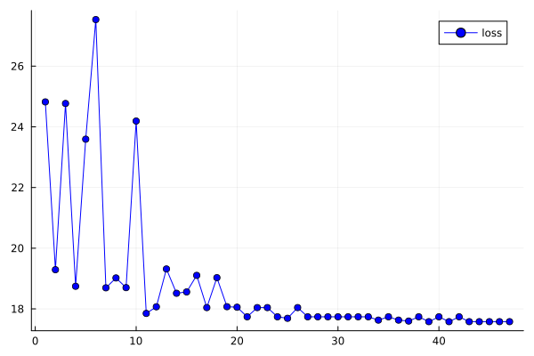

10 - Calibration
This tutorial explains how to fit simulation parameters to observed data using GEMS's built-in calibration tools. Calibration finds values for one or more parameters that minimise the difference between a simulated output and a reference time series. Under the hood, GEMS uses Optimization.jl as the optimisation backend, so any compatible solver can be plugged in.
You need three things: a Simulation object, a reference time series (the real-world data you want to match), and a target function that extracts the comparable quantity from the simulation after it has been run.
calibrate! writes the best-found parameter values back into the sim object and calls reinitialize! before returning. Any state accumulated during optimisation is therefore discarded and the simulation is ready to be run fresh with the optimal parameters.
Error Metrics
GEMS ships two ready-to-use loss functions that compare a simulated vector against a reference vector.
Mean Absolute Error (MAE)
using GEMS
ref = [1.0, 2.0, 3.0]
sim_output = [1.1, 1.9, 3.2]
mae(sim_output, ref) # returns ≈ 0.133Root Mean Squared Error (RMSE)
rmse(sim_output, ref) # returns ≈ 0.141Both functions accept two equally-sized Vectors and return a scalar score. RMSE penalises large deviations more strongly than MAE. You can also supply any custom two-argument function as the loss keyword when calling calibrate!.
Define ResultData style
Before we start, we define a custom ResultData style to avoid unnecessary post-processing time.
using GEMS
# Define custom ResultDataStyle for fast calibration
mutable struct CalibrationStyle <: GEMS.ResultDataStyle
data::Dict{String, Any}
function CalibrationStyle(pP::GEMS.PostProcessor)
funcs = Dict(
"dataframes" =>
Dict(
"tick_cases" => () -> GEMS.tick_cases(pP),
)
)
return new(GEMS.process_funcs(funcs))
end
endWhenever we need to extract the target data during the calibration loop, we can now pass this custom style to the ResultData constructor like this:
ResultData(sim, style = "CalibrationStyle")The CalibrationStyle defined above only computes tick_cases. If you calibrate on a different quantity — for example hospitalisations or recovered counts — you need to add the corresponding processing function to the funcs dict and update your target_fn accordingly. Including unnecessary data frames will slow down each calibration iteration.
Calibrating a Single Parameter
In this example we generate a synthetic reference time series by running a simulation at a known transmission rate, then recover that rate by calibrating a second simulation from a different starting point.
The target function extracts the daily exposed counts from the completed simulation. The parameter path "sim.pathogen.transmission_function.transmission_rate" navigates the nested object hierarchy to the field that should be optimised.
# 1. create "ground truth" by running a reference simulation
truth = Simulation(pop_size = 5_000, seed = 1)
run!(truth)
ref_ts = dataframes(ResultData(truth, style = "CalibrationStyle"))["tick_cases"][!, :exposed_cnt] |> Vector{Float64}
# 2. set up a new simulation with a different starting transmission rate
sim = Simulation(pop_size = 5_000, seed = 1)
# 3. define a target function that returns the same quantity from any run
target_fn = r -> dataframes(ResultData(r, style = "CalibrationStyle"))["tick_cases"][!, :exposed_cnt] |> Vector{Float64}
# 4. calibrate the transmission rate
sol = calibrate!(sim;
ref_ts = ref_ts,
target = target_fn,
x0 = [0.05], # initial guess
arg_x0 = ["sim.pathogen.transmission_function.transmission_rate"],
lower_limit = [0.0],
upper_limit = [1.0],
loss = rmse,
maxiters = 50)
println("Optimal transmission rate: ", sol.u[1])After calibrate! returns, sim already contains the optimal transmission rate and has been reinitialized, so you can call run!(sim) directly.
Use dot-notation to navigate the object tree starting from sim or the literal string "simulation". For example, "sim.pathogen.transmission_function.transmission_rate" resolves to sim.pathogen.transmission_function.transmission_rate. Single-level field names such as "seed" are resolved directly on the Simulation object.
Calibrating Setting Contact Rates
Contact rates for settings such as households, offices or schoolclasses can be calibrated by passing the pluralised setting accessor name as the parameter path. GEMS will then apply the optimised value to every setting of that type via its contact_sampling_method.
In this example we calibrate the household and schoolclass contact parameters simultaneously.
# generate reference data
truth = Simulation(pop_size = 5_000, seed = 42)
run!(truth)
ref_ts = dataframes(ResultData(truth, style = "CalibrationStyle"))["tick_cases"][!, :exposed_cnt] |> Vector{Float64}
sim = Simulation(pop_size = 5_000, seed = 42)
target_fn = r -> dataframes(ResultData(r, style = "CalibrationStyle"))["tick_cases"][!, :exposed_cnt] |> Vector{Float64}
sol = calibrate!(sim;
ref_ts = ref_ts,
target = target_fn,
x0 = [0.3, 0.2], # initial guesses: household rate, school rate
arg_x0 = ["households", "schoolclasses"],
lower_limit = [0.0, 0.0],
upper_limit = [2.0, 2.0],
maxiters = 100)
println("Household contact rate: ", sol.u[1])
println("Schoolclass contact rate: ", sol.u[2])Multi-Parameter Calibration
Parameters from different levels of the model hierarchy can be combined freely in a single calibration call. Here we optimise both a setting contact rate and the underlying transmission rate at the same time.
truth = Simulation(pop_size = 5_000, seed = 7)
run!(truth)
ref_ts = dataframes(ResultData(truth, style = "CalibrationStyle"))["tick_cases"][!, :exposed_cnt] |> Vector{Float64}
sim = Simulation(pop_size = 5_000, seed = 7)
target_fn = r -> dataframes(ResultData(r, style = "CalibrationStyle"))["tick_cases"][!, :exposed_cnt] |> Vector{Float64}
sol = calibrate!(sim;
ref_ts = ref_ts,
target = target_fn,
x0 = [0.4, 0.08],
arg_x0 = ["households",
"sim.pathogen.transmission_function.transmission_rate"],
lower_limit = [0.0, 0.0],
upper_limit = [2.0, 1.0],
maxiters = 150)
println("Household contact rate: ", sol.u[1])
println("Transmission rate: ", sol.u[2])The length of x0, arg_x0, lower_limit, and upper_limit must always match. Pass nothing instead of a bound vector to leave one or both sides unconstrained.
Averaging Over Multiple Runs
Because epidemic simulations are stochastic, a single run can be a noisy estimate of the expected output. Setting n > 1 tells calibrate! to run the simulation n times per loss evaluation, each with a different seed, and average the resulting loss. This makes the optimisation landscape smoother at the cost of runtime.
truth = Simulation(pop_size = 5_000, seed = 1)
run!(truth)
ref_ts = dataframes(ResultData(truth, style = "CalibrationStyle"))["tick_cases"][!, :exposed_cnt] |> Vector{Float64}
sim = Simulation(pop_size = 5_000, seed = 1)
target_fn = r -> dataframes(ResultData(r, style = "CalibrationStyle"))["tick_cases"][!, :exposed_cnt] |> Vector{Float64}
sol = calibrate!(sim;
ref_ts = ref_ts,
target = target_fn,
x0 = [0.05],
arg_x0 = ["sim.pathogen.transmission_function.transmission_rate"],
lower_limit = [0.0],
upper_limit = [1.0],
n = 5, # average loss over 5 independent runs
maxiters = 50)Each iteration of the optimiser will now run the simulation n times, so choose n according to how much noise is present in your output and how much compute time you can afford.
Plotting the Training Curve
Passing plot_training = true will display a live loss curve during optimisation so you can monitor convergence.
truth = Simulation(pop_size = 5_000, seed = 1)
run!(truth)
ref_ts = dataframes(ResultData(truth, style = "CalibrationStyle"))["tick_cases"][!, :exposed_cnt] |> Vector{Float64}
sim = Simulation(pop_size = 5_000, seed = 1)
target_fn = r -> dataframes(ResultData(r, style = "CalibrationStyle"))["tick_cases"][!, :exposed_cnt] |> Vector{Float64}
sol = calibrate!(sim;
ref_ts = ref_ts,
target = target_fn,
x0 = [0.05],
arg_x0 = ["sim.pathogen.transmission_function.transmission_rate"],
lower_limit = [0.0],
upper_limit = [1.0],
n = 5,
maxiters = 100,
plot_training = true) # renders a live loss curvePlot

The loss curve lets you judge whether the optimiser has converged or whether more iterations are needed. A flattening curve indicates convergence; a curve still declining steeply at the iteration limit suggests increasing maxiters.
Using a Custom Loss Function
Any two-argument function that accepts two equally-sized vectors and returns a scalar can be used as the loss. The following example uses a simple sum-of-squares loss instead of RMSE.
my_loss(simulated, reference) = sum((simulated .- reference) .^ 2)
truth = Simulation(pop_size = 5_000, seed = 1)
run!(truth)
ref_ts = dataframes(ResultData(truth, style = "CalibrationStyle"))["tick_cases"][!, :exposed_cnt] |> Vector{Float64}
sim = Simulation(pop_size = 5_000, seed = 1)
target_fn = r -> dataframes(ResultData(r, style = "CalibrationStyle"))["tick_cases"][!, :exposed_cnt] |> Vector{Float64}
sol = calibrate!(sim;
ref_ts = ref_ts,
target = target_fn,
x0 = [0.05],
arg_x0 = ["sim.pathogen.transmission_function.transmission_rate"],
lower_limit = [0.0],
upper_limit = [1.0],
loss = my_loss,
maxiters = 50)